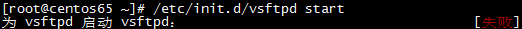
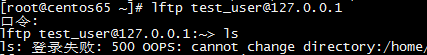

ftp部署和优化
Table of Contents
1 ftp部署和优化
ftp == file transfer protocol
1.1 使用vsftp部署
vsftp == Very Secure FTP
1.1.1 安装vsftp
yum install -y vsftpd
1.1.2 使用默认配置启动vsftp
- 启动vsftp
/etc/init.d/vsftp start如果出现启动失败,如:netstat -lnp查看ftp端口21,是否被占用,如果被占用,kill掉占用程序,再重启;如果出现
则可能是防火墙的问题,要检查iptables和selinux
- 使用lftp1登录到vsftp
使用默认配置的情况下,可以使用系统用户进行登录
lftp user@192.168.0.249;但是在这种情况下,进入到ftp服务器中,有非常大的权限,很危险,可以看到整个系统;
1.1.3 配置vsftpd.conf
针对默认配置中的过大权限问题可以做如下修改:
- 指定ftp服务器根目录
chroot_local_user=YES; 在这种情况下,无法切换到系统的其他目录中去,即限制了目录权限;- (no term)
- 配置虚拟用户
- 创建虚拟用户对应的用户
- useradd virftp -s /sbin/nologin
- 创建存放虚拟用户的用户名和密码的文件
- vim /etc/vsftpd/vsftpdlogin
user1_name user1_passwd user2_name user2_passwd
- 修改vsftpdlogin的权限,使其只能被root读写
- chmod 600 /etc/vsftpd/vsftpdlogin
- 生成能被vsftpd识别的二进制密码库文件
db_load -T -t hash -f /etc/vsftpd/vsftpd_login /etc/vsftpd/vsftpd_login.db2- 生成存放虚拟用户配置文件的目录
mkdir /etc/vsftpd/vsftpd_user_conf- 切换到
vsftpd_user_conf - cd !$
- 创建和虚拟用户同名的虚拟用户配置文件
vim test1_name#虚拟用户根目录 local_root=/home/virftp/test1 #是否允许匿名登录 anonymous_enable=NO #是否允许写入 write_enable=YES #本地umask值 local_umask=022 #是否允许匿名上传 anon_upload_enable=NO #是否允许匿名创建目录 anon_mkdir_write_enable=NO idle_session_timeout=600 data_connection_timeout=120 #最大连接客户端数 max_clients=10 max_per_ip=5 #最大速率 local_max_rate=50000
- 在映射用户的家目录下创建虚拟用户的家目录
mkdir /home/virftp/test1- 更改虚拟用户的家目录的属主属组
chown -R virftp:virftp /home/virftp/test1- 编辑认证文件
- =vim /etc/pam.d/vsftpd
auth sufficient /lib/security/pam_userdb.so db=/etc/vsftpd/vsftpd_login account sufficient /lib/security/pam_userdb.so db=/etc/vsftpd/vsftpd_login
- 确认是否存在指定文件
/lib/security/pam_userdb.so,如果是在32位系统中,就在/lib目录下, 如果是64位,则在/lib64下,想要知道自己系统是什么架构,uname -a- 编辑vsftpd.conf
- 做如下要求的修改:禁止匿名登录,
禁止本地用户登录,禁止写,匿名用户禁止创建目录等,打开chroot_local_user=YES,并追加如下内容:guest_enable=YES guest_username=virftp virtual_use_local_privs=YES user_config_dir=/etc/vsftpd/vsftpd_user_conf
1.2 使用pureftp部署
pureftp的优点 pureftp的缺点
1.2.1 安装pureftpd
- 下载软件
[root@localhost ~]# cd /usr/local/src/ [root@localhost src]# wget http://download.pureftpd.org/pub/pure-ftpd/releases/pure-ftpd-1.0.42.tar.bz2
- 安装pure-ftpd
[root@localhost src]# tar jxf pure-ftpd-1.0.42.tar.bz2 [root@localhost src]# cd pure-ftpd-1.0.42 [root@localhost pure-ftpd-1.0.42]# ./configure \ --prefix=/usr/local/pureftpd \ --without-inetd \ --with-altlog \ --with-puredb \ --with-throttling \ --with-peruserlimits \ --with-tls [root@localhost pure-ftpd-1.0.42]# make && make install
1.2.2 配置pure-ftpd
- 修改配置文件
[root@localhost pure-ftpd-1.0.42]# cd configuration-file [root@localhost pure-ftpd-1.0.42]# mkdir -p /usr/local/pureftpd/etc/ [root@localhost configuration-file]# cp pure-ftpd.conf /usr/local/pureftpd/etc/pure-ftpd.conf [root@localhost configuration-file]# cp pure-config.pl /usr/local/pureftpd/sbin/pure-config.pl [root@localhost configuration-file]# chmod 755 /usr/local/pureftpd/sbin/pure-config.pl
在启动pure-ftpd之前要先修改配置文件,配置文件为
/usr/local/pureftpd/etc/pure-ftpd.conf, 直接拷贝以下内容;ChrootEveryone yes BrokenClientsCompatibility no MaxClientsNumber 50 Daemonize yes MaxClientsPerIP 8 VerboseLog no DisplayDotFiles yes AnonymousOnly no NoAnonymous no SyslogFacility ftp DontResolve yes MaxIdleTime 15 PureDB /usr/local/pureftpd/etc/pureftpd.pdb LimitRecursion 3136 8 AnonymousCanCreateDirs no MaxLoad 4 AntiWarez yes Umask 133:022 MinUID 100 AllowUserFXP no AllowAnonymousFXP no ProhibitDotFilesWrite no ProhibitDotFilesRead no AutoRename no AnonymousCantUpload no PIDFile /usr/local/pureftpd/var/run/pure-ftpd.pid MaxDiskUsage 99 CustomerProof yes
- 启动pure-ftpd
[root@localhost ~]# /usr/local/pureftpd/sbin/pure-config.pl /usr/local/pureftpd/etc/pure-ftpd.conf
如果显示以Running开关的信息,就表明启动成功;
- 建立帐号
[root@localhost ~]# mkdir /data/www/ [root@localhost ~]# useradd www [root@localhost ~]# chown -R www:www /data/www/ [root@localhost ~]# /usr/local/pureftpd/bin/pure-pw useradd ftp_user1 -uwww -d /data/www/ Password: Enter it again:
其中，-u将虚拟用户ftpuser1与系统用户www关联在一起，也就是说使用ftpuser1账号登陆ftp后，会以www的身份来读取文件或下载文件。-d 后边的目录为ftpuser1账户的家目录，这样可以使ftpuser1只能访问其家目录/data/www/. 到这里还未完成，还有最关键的一步，就是创建用户信息数据库文件:
[root@localhost ~]# /usr/local/pureftpd/bin/pure-pw mkdb
pure-pw还可以列出当前的ftp账号，当然也可以删除某个账号, 我们再创建一个账号:
[root@localhost ~]# /usr/local/pureftpd/bin/pure-pw useradd ftp_user2 -uwww -d /tmp [root@localhost ~]# /usr/local/pureftpd/bin/pure-pw mkdb
列出当前账号:
[root@localhost ~]# /usr/local/pureftpd/bin/pure-pw list
删除账号的命令为:
[root@localhost ~]# /usr/local/pureftpd/bin/pure-pw userdel ftp_user2
1.2.3 测试pure-ftpd
测试需要使用的工具叫做 lftp;
[root@localhost ~]# yum install -y lftp
测试:
[root@localhost ~]# touch /data/www/123.txt [root@localhost ~]# lftp ftp_user1@127.0.0.1 口令: lftp ftp_user1@127.0.0.1:~> ls drwxr-xr-x 2 514 www 4096 Jun 12 11:14 . drwxr-xr-x 2 514 www 4096 Jun 12 11:14 .. -rw-r--r-- 1 514 www 0 Jun 12 11:14 123.txt
登陆后，使用 ls 命令可以列出当前目录都有什么文件。